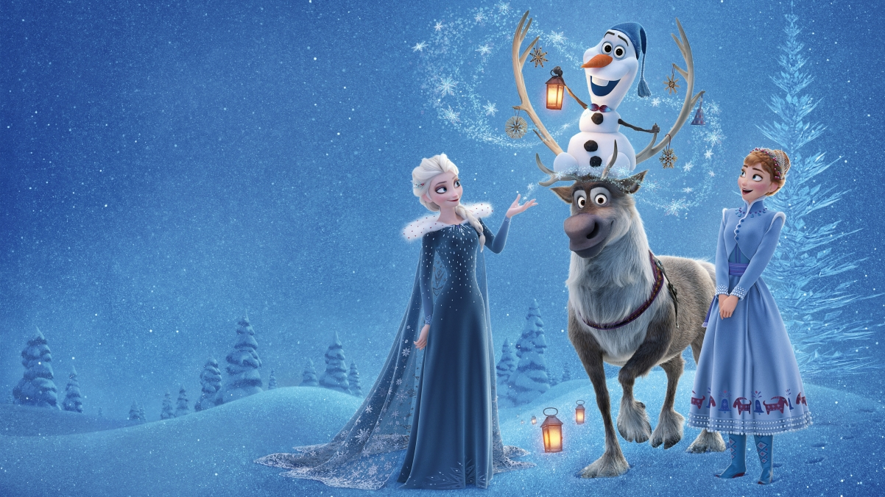

雪宝独唱 · Josh Gad · 时长 1:54
📖 In Summer
雪宝独唱 · Josh Gad · 时长 1:54
一、歌曲基本信息
词曲作者
Kristen Anderson-Lopez & Robert Lopez
《In Summer》是《冰雪奇缘 (Frozen, 2013)》中的经典歌曲，由Kristen Anderson-Lopez与Robert Lopez创作。这首歌在电影中承担着重要的叙事功能，是角色情感表达和剧情推进的关键节点。（来源：迪士尼官方 / Frozen原声带）
>
二、完整歌词（中英对照 · 逐句交互 · 播放高亮）
CHORUS · 副歌
💡 点击查看逐句考据
📝 逐句考据
蜜蜂会嗡嗡叫——雪宝的第一项夏日幻想清单开场。它从最美满的意象（阳光下的蜜蜂、蒲公英）谈起，仿佛在背一首向往的田园诗。它越把夏天描绘得生机盎然，观者便越揪心：这个靠冰维持的精灵，对暖意毫无防备。
Kids'll blow dandelion fuzz
孩子们会吹散蒲公英绒毛
💡 点击查看逐句考据
📝 逐句考据
雪宝把夏天想象成一幅最无害的田园画：孩子们对着蒲公英吹气。它越把夏天描绘得体面温柔，就越显它对高温全无概念——这些"棉花糖般的念头"全来自它对暖的纯真憧憬，观者却忍不住替它捏一把汗。
And I'll be doing whatever snow does
而我将做着雪会做的事
💡 点击查看逐句考据
📝 逐句考据
雪宝天真地以为，自己到了夏天仍会照常"做雪该做的事"。它把自己当作一件量产的雪人，却不知季节会怎样吞噬它——这句近乎自况的预言，让整首歌的雀跃都铺上一层温柔的悲剧底色。
💡 点击查看逐句考据
📝 逐句考据
在夏天（第一次点题）。雪宝第一次吐出这个令它魂牵梦萦的词，双眼放光地幻想：阳光、沙滩、温暖的怀抱。听众知道它是冰雪做的精灵，幽默反讽立刻成立——它把夏天错当成 typo 般美好的终极愿望。
A drink in my hand
手中一杯饮料
💡 点击查看逐句考据
📝 逐句考据
雪宝幻想的夏日标配：手里一杯冷饮。它把"夏天=放松=快乐"当成不证自明的真理，还煞有介事地罗列细节；它越妆容齐整地畅想，观众越清楚这套蓝图与它的存在本身性命攸关。
My snow up against the burning sand
我的雪靠着滚烫的沙子
💡 点击查看逐句考据
📝 逐句考据
我的雪，贴着滚烫的沙地——雪宝大胆构想“雪与滚烫沙地对峙”的画面，把最不可能共存的物象强行并置。观众一眼看出这是物理上的自杀式联想，而它天真地当作了骄傲的资本，讽刺与可爱在此相撞。
CHORUS · 副歌
Prob'ly getting gorgeously tanned
大概会晒成漂亮的古铜色
💡 点击查看逐句考据
📝 逐句考据
晒成漂亮的古铜色——雪宝连"晒黑"这种最耗凉的副作用，都被它幻想成光彩耀人的幸事。物理常识与它脑内浪漫图景的落差造出全曲最大笑点，也让这份"我会变成阳光美男"的自信显得既可爱又心酸。
💡 点击查看逐句考据
📝 逐句考据
在夏天（第二次点题）。它开始细数夏日的美好设想，边说边手舞足蹈；导演在这里提前揭底——观众看见它脚下的冰正在滴水，它的天真与现实的残酷就在同一帧里相撞。
I'll finally see a summer breeze blow away a winter storm
我终于会看到夏日微风卷走冬日风暴
💡 点击查看逐句考据
📝 逐句考据
我终于能看到夏日的微风吹散冬日的风暴，雪宝想象夏天的温暖能驱散冬天的寒冷。他不知道的是，夏天的温暖对他来说是致命的——他以为夏天的微风是美好的，实际上那是他的终结者。
And find out what happens to solid water when it gets warm
看看固态的水变暖后会怎样
💡 点击查看逐句考据
📝 逐句考据
并发现固态水变暖后会发生什么！，雪宝好奇冰变暖后会怎样。这是一个充满戏剧性讽刺的歌词——观众知道冰变暖会融化，但雪宝不知道，他还在好奇地期待答案——这个答案，就是他的命运。
And I can't wait to see
我等不及要看
💡 点击查看逐句考据
📝 逐句考据
我迫不及待想看——雪宝急切地把“夏日亮相”预演成一场被众人喝彩的演出。它笃定自己会因与众不同而受追捧，而真相是它一旦踏入夏天便会融化——这个反差让它的“迫不及待”每一句都像倒计时。
What my buddies all think of me
我的伙伴们会怎么看我
💡 点击查看逐句考据
📝 逐句考据
雪宝挂心的并非自己能否活过夏天，而是"伙伴们会怎么看我"。它把备受关注与赞许当成理想夏日的动力——这份对认同的渴求，恰是它作为艾莎所造、又长期陪伴安娜的"孩子气角色"最动人的一面。
CHORUS · 副歌
Just imagine how much cooler I'll be
想象一下我会变得多酷
💡 点击查看逐句考据
📝 逐句考据
"想象一下我会变得多酷"——雪宝把"cool"当成时髦的夸奖，却不知道对夏日里的雪人而言，它字面意义上的寒冷才是续命的关键。这层双关的误会，让它的沾沾自喜既好笑又令人心疼。
💡 点击查看逐句考据
📝 逐句考据
在夏天（第三次点题）。渐入高潮，雪宝的想象愈发离谱，把“夏天”彻底神圣化成永生极乐之地；它越认真，喜剧的张力越强，也越让人心疼这个连自己会融化都不知道的生物。
Da da, da doo, ah bah bah bah bah bah boo
哒哒，哒嘟，啊巴巴巴巴巴巴布
💡 点击查看逐句考据
📝 逐句考据
一连串无意义的哼唱，是雪宝在向"夏天"唱小夜曲。玩闹式的旋律堆叠，恰如其分地表现它初次幻想爱情的轻浮与热烈——没有实质内容，却满是涌上心头的甜腻泡沫。
The hot and the cold are both so intense
炎热与寒冷都如此强烈
💡 点击查看逐句考据
📝 逐句考据
热和冷都是如此强烈，雪宝说热和冷都很强烈。他不知道的是，热对他来说是致命的，而冷是他生存的必要条件——他以为热和冷是平等的，实际上热是他的敌人。
Put 'em together it just makes sense!
把它们合在一起就太有道理了！
💡 点击查看逐句考据
📝 逐句考据
把它们放在一起，就很合理了！，雪宝天真地认为热和冷可以共存。这是他对夏天的误解——他不知道热会消灭冷，就像他不知道夏天会消灭他——这种天真，让他的角色更加可爱，也更加让人心酸。
💡 点击查看逐句考据
📝 逐句考据
仍是哼唱点缀。此时雪宝几乎已相信自己是"夏日之子"了，音节越随意，越显它把幻想当真的投入——滑稽的欢唱里，是一个单靠爱与想象支撑存在的雪人。
CHORUS · 副歌
Winter's a good time to stay in and cuddle
冬天适合待在家里拥抱
💡 点击查看逐句考据
📝 逐句考据
冬天是待在室内拥抱的好时候，雪宝承认冬天也有好处。但他更向往夏天的户外活动——他不知道的是，冬天才是他能生存的季节，夏天是他的末日。
But put me in summer and I'll be a —
但把我放到夏天，我就会变成一个——
💡 点击查看逐句考据
📝 逐句考据
"可我一到夏天就会变成一个——"话说到一半悬住、词穷。雪宝本要报出一个光鲜的身份，却卡了壳；这种"蓄势却措手不及"的瞬间，恰是它天真本性的注解，也为下一句"尽管这和物理相悖"铺好了台阶。
💡 点击查看逐句考据
📝 逐句考据
快乐的雪人！，雪宝最后说自己会变成一个快乐的雪人。这是全曲最具讽刺性的歌词——观众知道他在夏天不会快乐，反而会融化——但他的天真和乐观，让他相信自己会快乐，这种信念，既可爱又让人心酸。
When life gets rough I like to hold on to my dream
生活艰难时，我喜欢紧抱我的梦想
💡 点击查看逐句考据
📝 逐句考据
雪宝道出全片关于乐观的题眼：生活再难，我也要紧紧抱住我的梦想。一个随时会融化的雪人，靠想象火热的夏天为自己取暖——它的"梦"既全无根据，也是它能在冷酷世界活下去的信仰。
Of relaxing in the summer sun, just lettin' off steam
在夏日阳光下放松，尽情释放
💡 点击查看逐句考据
📝 逐句考据
在夏日阳光下放松、尽情释放——雪宝把"lettin' off steam"用成字面上的"冒蒸汽"，又一次在无意间拿生命开玩笑。它越把蒸发说得惬意，越映照出它对自身因季节而脆弱的全然不知。
Oh the sky will be blue
哦，天空会湛蓝
💡 点击查看逐句考据
📝 逐句考据
雪宝坚信夏日的天空会湛蓝。它把"蓝"当作美好的信号，却不懂自己正依赖"蓝"的反面——寒冷与白雪——才得以存在。它的蓝天情结，是整支歌里最温柔的错觉。
CHORUS · 副歌
And you guys'll be there too
你们也会在那里
💡 点击查看逐句考据
📝 逐句考据
雪宝承诺它最在乎的人都会一路相伴：克里斯托夫、安娜，还有刻在它记忆里那个盛夏里的亲友。它唱的不只是天气，而是"与重要的人在一起"的执念——这让它的夏天梦，从自娱自乐升华为对爱与陪伴的告白。
When I finally do what frozen things do
当我终于做到冰冻之物会做的事
💡 点击查看逐句考据
📝 逐句考据
等我终于作了“冰雪之物”该做的事——雪宝这句近乎自况的预言，轻轻点破了它的宿命：冰雪之物在夏天能做的，只有融化成水。它唱得越雀跃，越像一首甜美的挽歌，也为《冰雪2》里它曾融化、终获成长的命运埋下伏笔。
💡 点击查看逐句考据
📝 逐句考据
在夏天（最终点题）。全曲在它一声比一声高的“在夏天”中收束，雪宝攥着清澈的信念不肯松口；幽默与深情在此合流——正因为观众知晓真相，它这份无知的热望才格外动人。
💡 点击查看逐句考据
📝 逐句考据
在夏天（第一次点题）。雪宝第一次吐出这个令它魂牵梦萦的词，双眼放光地幻想：阳光、沙滩、温暖的怀抱。听众知道它是冰雪做的精灵，幽默反讽立刻成立——它把夏天错当成 typo 般美好的终极愿望。
📄 🎯 歌曲定位
- 雪宝独唱：雪宝（Olaf，Josh Gad 配音）的独唱，时长 1:54，出现在三人组遇雪宝后、于荒野行进时。
- 风格：经典歌舞杂耍（vaudeville）式的 soft-shoe 软鞋舞曲，轻快爵士味、行走低音线 + 尤克里里质感 [来源：visualfoodie / justapedia]。
📄 💡 内涵与主题

夏日幻想把“夏天”当不证自明真理的雪宝——它越雀跃，观者越忍不住替它捏一把汗。
- 表层：雪宝畅想夏日的种种——蜜蜂、蒲公英、沙滩、古铜色皮肤、夏日微风，天真又雀跃。
- 戏剧反讽（核心笑点）：观众都知道雪人遇热会融化，而雪宝每一条"夏日幻想"恰恰都在加速自己的消亡；其"无知"本身即是喜剧与一丝悲凉的来源 [来源：justapedia / visualfoodie]。
- 情感内核：雪宝是艾莎与安娜童年造雪记忆的"最后残片"，仍带着两姐妹当年的天真，所以一切举动都透着"稚嫩的希望" [来源：Josh Gad 访谈，justapedia]。
📄 🎬 在电影中的作用
- 喜剧喘息与角色深化：在逃亡 / 寻姐的紧张线索中插入，用雪宝的乐观冲淡黑暗；同时让观众更爱这个"可怜又无知"的角色。
- 推进羁绊：雪宝对"夏天"的向往，隐喻他对温暖与陪伴的渴望，为后续他成为"真爱"象征埋线。
📄 🌱 来源与创作灵感
- 词曲：Kristen Anderson-Lopez & Robert Lopez。
- 前身废案：本曲取代了更早的雪宝歌 "Hot Hot Ice"，Anderson-Lopez 自评"像 Hot Hot Hot 遇上 Simon & Garfunkel，行不通" [来源：The Art of Frozen / justapedia]。
- 为嗓量体裁衣：Robert Lopez 因曾与 Josh Gad 合作《摩门经》（Gad 是原版 Elder Cunningham），熟知其声线，据此写歌；Gad 还主动要求来一段"歌剧式结尾"，主创欣然采纳 [来源：Josh Gad 访谈，justapedia]。
📄 🛠️ 制作过程
- 由 Josh Gad 演唱；大量对白与演唱来自即兴，雪宝"自发的、孩子气"的个性由此定型 [来源：eathealthy365 幕后故事]。
- 视觉呼应：结尾旋转跟拍镜头致敬《音乐之声》中 Julie Andrews 唱 "The Sound of Music" 的经典运镜 [来源：Time]。
📄 🔍 解析与评价
- 《时代》周刊称其为"影片中段停演秀（mid-show-stopper）"与"音乐喜剧的奇迹"，赞其角色、声音与画面编舞的绝妙结合 [来源：Time]。
- CinemaBlend、National Catholic Register 等称其为"全片最佳歌曲"；Variety 赞其"最具灵气的音乐段落" [来源：CinemaBlend / NCR / Variety]。
- 结构上是刻意"不把自己当回事"的少数曲目之一，正因如此被不少乐评列为原声带最佳 [来源：Sputnikmusic]。
📄 🌍 文化影响与获奖
- 商业：进入榜单——美国 Billboard Bubbling Under Hot 100 第 4 位、Heatseekers 第 12 位；美国 RIAA 金认证（50 万）[来源：Kiddle]。
- 多语言：韩语版（Lee Jangwon 演唱）在韩国 Gaon 下载榜上榜 [来源：Kiddle]。
- 文化：作为雪宝的标志唱段，成为《冰雪奇缘》最被二创 / 引用的喜剧名场面之一，并在百老汇音乐剧版中保留。
📌 本页要点
本页核心要点：①🎧 原声试听：Kids'll blow dandelion fuzz孩子们会吹散蒲公英绒毛…；②📄 🎯 歌曲定位；③📄 💡 内涵与主题；④📄 🎬 在电影中的作用；⑤📄 🌱 来源与创作灵感。来源：电影正典、官方设定集与官方小说综合梳理。